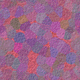

yo there it is brook or null or anything pls join windows webring // tryin 2 code in this limited space, no innerhtml/onclick beloved +url('...') is broken pls fix test bg u can just select text actually 2 see our ramblings cool personified windows webproject ost hereeee complicated scriptin here is quite a pain, a real ton of interpreters strikin also pls do not attack
wip 